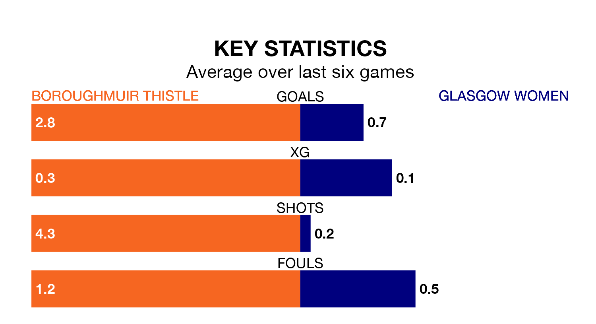

Mid-season relegation candidates Glasgow Women face a challenge away against high-flying Boroughmuir Thistle at the Meadowbank Stadium on Sunday.
Glasgow Women are fifth in the SWPL 2 table, and have picked up three wins and five draws in their 14 games to date.
Boroughmuir Thistle, meanwhile, are fourth in the standings with 25 points, having won seven and drawn four, and are 12 points behind table-toppers Queen's Park W.
With 13 goals in 14 games so far this season, Glasgow are the league's second-lowest scorers with 0.9 goals per game. And they are conceding more than average, letting in 28 goals at a rate of 2.0 per game.
Boroughmuir Thistle, meanwhile, are above average scorers, with 2.3 goals per game, compared to a league average of 1.9. They have conceded 0.9 goals per game.
In the last 10 years, Boroughmuir Thistle and Glasgow have played each other on eight occasions. Boroughmuir Thistle won one of them, Glasgow six, and they drew once.
On average, Boroughmuir Thistle scored 1.6 goals and Glasgow 2.2 in those matches.
Their last meeting was on October 22, when Boroughmuir Thistle won 4-1 away.
The home side are in good form in SWPL 2, with four wins and two draws from their last six games.
With a win and two draws over that period, the visitors' form is much worse – they have taken five points from 18, compared to Boroughmuir Thistle's 14.
Boroughmuir Thistle's last match was on Sunday, a 1-1 draw against Queen's Park Women, with getting the goal for Boroughmuir Thistle.
Glasgow lost 3-1 against Gartcairn Women last time out, also on Sunday, with on the scoresheet.
Updated: 10:02 (UTC), 19/01/24